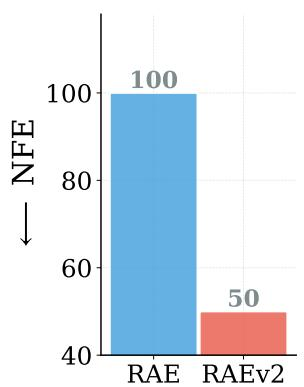
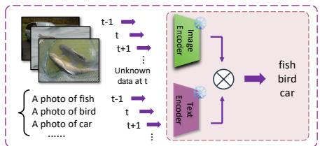
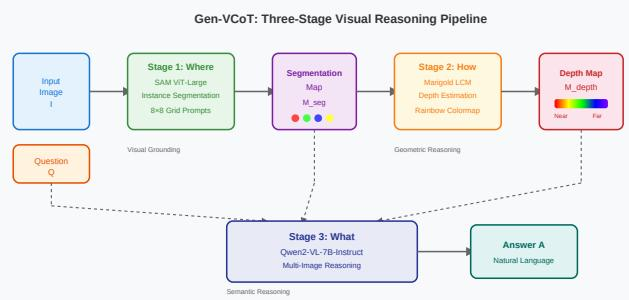
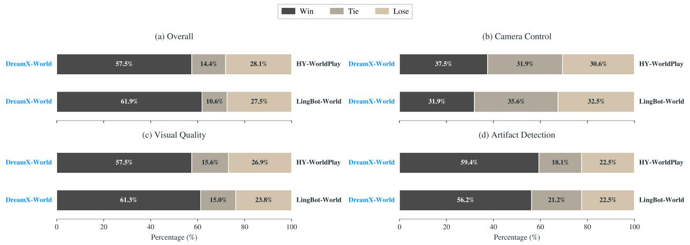

6 月 17 日：Momentum-Guided Semantic Forecasting (MoFore) for 等视觉表征主线更新
本期聚焦通用视觉表征、视觉语言预训练与视频自监督中最值得跟进的论文，并保留 CCF A/B、OpenReview 与 arXiv 状态线索。
先读 MoFore，它是今天最直接的 self-supervised video representation paper，核心问题是不用像素重建而预测未来 latent embedding 是否足够稳定。第二篇读 Drift-RAE，接着读 RAEv2，两篇合起来说明 RAE/DINO latent 已经成为 diffusion/flow training 的主战场，但各自分别处理 distillation 稳定性和 baseline 简化。第三篇读 SSync，它和昨天的 TSA/Dual-State Slot Attention 形成 object-centric video SSL 连续线索。随后读 CSAE、TIGER 和 SAGA：它们都不完全是传统 SSL，但分别从 MLLM 内部概念、冻结 VFM 专家路由、冻结 MLLM 属性梯度三个方向影响通用视觉表征的可解释性和迁移。DifFRACT、Gen-VCoT、DreamX-World 与 DiverseDiT 只需第二轮扫读机制和失败模式；Spatial Priors 主要作为 ICML 2026 状态与小数据 ViT inductive bias 参考。
论文索引
| 优先级 | 论文 | 类型 | 相关性 | 一句话理由 |
|---|---|---|---|---|
| P0 | Momentum-Guided Semantic Forecasting (MoFore) for Self-Supervised Video Representation Learning | arXiv 新增 + video SSL | 高 | 直接把视频 SSL 从 masked reconstruction 推到未来 latent embedding forecasting，是今天最贴合主方向的条目。 |
| P0 | Distilling Drifting Transformers with Representation Autoencoders | arXiv 新增 + RAE distillation | 高 | 针对 DINO/RAE 语义 latent 的各向异性和曲率问题，讨论怎样稳定蒸馏 flow/diffusion 模型。 |
| P0 | Selective Synergistic Learning for Video Object-Centric Learning | arXiv 新增 + object-centric video SSL | 高 | 不再做全 patch 密集对齐，而是选择性蒸馏 encoder 边界和 decoder 内部区域，直接服务视频 slot 表征。 |
| P1 | Cascaded Sparse Autoencoders Learn Multi-Level Visual Concepts in Multimodal LLMs | arXiv 新增 + MLLM visual concept interpretability | 高 | 用级联 SAE 学“概念的概念”，对理解 MLLM 视觉表征层级很有价值。 |
| P1 | Task-Instructed Causal Routing of Vision Foundation Models for Multi-Task Learning | arXiv 新增 + frozen VFM routing | 中高 | 把多个冻结 VFM 的互补偏置做 token-level task routing，可作为 VFM ensemble/adapter 设计参考。 |
| P1 | Beyond Scalar Distances: Semantic Attribute Gradients from Frozen MLLMs for Visual Embeddings | arXiv 新增 + MLLM-guided visual embedding | 中高 | 用冻结 MLLM 的属性判断把 pair-level metric loss 变成 attribute-resolved supervision，符合语言辅助视觉表征塑形路线。 |
| P1 | Improved Baselines with Representation Autoencoders | arXiv 更新 + RAEv2 | 高 | replacement/update；系统简化 RAE baseline，提出 RAE+REPA 互补和 free guidance，是今天 Drift-RAE 的关键背景。 |
| P2 | DifFRACT: Diffusion Feature Reconstruction and Attribution for Circuit Tracing | arXiv 新增 + MM-DiT interpretability | 中高 | 把 transcoder circuit tracing 扩展到多模态 diffusion transformer，可解释 text/image feature 如何跨 denoising 传播。 |
| P2 | Label Shift Aware Adaptation for Online Zero-shot Learning with CLIP | arXiv 新增 + CLIP test-time adaptation | 中 | 不是预训练算法，但系统处理 CLIP 在线零样本下的 label shift，对表征部署和评估有参考价值。 |
| P2 | Gen-VCoT: Generative Visual Chain-of-Thought Reasoning via Diffusion-Based RGB Intermediate Representations | arXiv 新增 + visual intermediate reasoning | 中 | 让 MLLM reasoning 产生 RGB 中间图像，值得关注视觉中间表征什么时候帮助、什么时候伤害。 |
| P2 | DreamX-World 1.0: A General-Purpose Interactive World Model | arXiv 新增 + interactive video world model | 中 | 偏生成系统，但 camera geometry、memory-conditioned scene persistence 和 long-rollout training 对视频表征/world model 有信号。 |
| P3 | DiverseDiT: Towards Diverse Representation Learning in Diffusion Transformers | arXiv 更新 + CVPR 2026 accepted | 中 | replacement/status update；关注 DiT 内部 representation diversity，与 REPA/RAE 方向相邻。 |
| 扫读 | Spatial Priors via Space Filling Curves for Small and Limited Data Vision Transformers | arXiv 新增 + ICML 2026 | 中 | 给小数据 ViT 注入空间填充曲线先验，非 SSL 主线但对低数据视觉表征 inductive bias 有参考价值。 |
主线阅读

Momentum-Guided Semantic Forecasting (MoFore) for Self-Supervised Video Representation Learning
高相关；详见方法、贡献和实验边界。
方法：直接把视频 SSL 从 masked reconstruction 推到未来 latent embedding forecasting，是今天最贴合主方向的条目

Distilling Drifting Transformers with Representation Autoencoders
高相关；详见方法、贡献和实验边界。
方法：针对 DINO/RAE 语义 latent 的各向异性和曲率问题，讨论怎样稳定蒸馏 flow/diffusion 模型

Selective Synergistic Learning for Video Object-Centric Learning
高相关；详见方法、贡献和实验边界。
方法：不再做全 patch 密集对齐，而是选择性蒸馏 encoder 边界和 decoder 内部区域，直接服务视频 slot 表征

Cascaded Sparse Autoencoders Learn Multi-Level Visual Concepts in Multimodal LLMs
高相关；详见方法、贡献和实验边界。
方法：用级联 SAE 学“概念的概念”，对理解 MLLM 视觉表征层级很有价值

Task-Instructed Causal Routing of Vision Foundation Models for Multi-Task Learning
中高相关；详见方法、贡献和实验边界。
方法：把多个冻结 VFM 的互补偏置做 token-level task routing，可作为 VFM ensemble/adapter 设计参考

Beyond Scalar Distances: Semantic Attribute Gradients from Frozen MLLMs for Visual Embeddings
中高相关；详见方法、贡献和实验边界。
方法：用冻结 MLLM 的属性判断把 pair-level metric loss 变成 attribute-resolved supervision，符合语言辅助视觉表征塑形路线

Improved Baselines with Representation Autoencoders
高相关；详见方法、贡献和实验边界。
方法：replacement/update；系统简化 RAE baseline，提出 RAE+REPA 互补和 free guidance，是今天 Drift-RAE 的关键背景

DifFRACT: Diffusion Feature Reconstruction and Attribution for Circuit Tracing
中高相关；详见方法、贡献和实验边界。
方法：把 transcoder circuit tracing 扩展到多模态 diffusion transformer，可解释 text/image feature 如何跨 denoising 传播

Label Shift Aware Adaptation for Online Zero-shot Learning with CLIP
中相关；详见方法、贡献和实验边界。
方法：不是预训练算法，但系统处理 CLIP 在线零样本下的 label shift，对表征部署和评估有参考价值

Gen-VCoT: Generative Visual Chain-of-Thought Reasoning via Diffusion-Based RGB Intermediate Representations
中相关；详见方法、贡献和实验边界。
方法：让 MLLM reasoning 产生 RGB 中间图像，值得关注视觉中间表征什么时候帮助、什么时候伤害

DreamX-World 1.0: A General-Purpose Interactive World Model
中相关；详见方法、贡献和实验边界。
方法：偏生成系统，但 camera geometry、memory-conditioned scene persistence 和 long-rollout training 对视频表征/world model 有信号

DiverseDiT: Towards Diverse Representation Learning in Diffusion Transformers
中相关；详见方法、贡献和实验边界。
方法：replacement/status update；关注 DiT 内部 representation diversity，与 REPA/RAE 方向相邻

Spatial Priors via Space Filling Curves for Small and Limited Data Vision Transformers
中相关；详见方法、贡献和实验边界。
方法：给小数据 ViT 注入空间填充曲线先验，非 SSL 主线但对低数据视觉表征 inductive bias 有参考价值